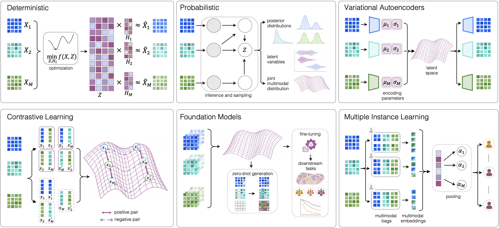

Decision support
Find methods by the axes used in the review
Start with what is known about the data, then refine by model assumptions and task. Leaving a field unspecified keeps the search broad.
- Specify data regime
- Refine method properties
- Review candidate methods
- Suggest additions through curation
0
methods
0
visible after filters
0
publication links
0
resource links
View review framework figures


Filter by review axes